Trustworthy safety-critical systems
Risk perception, cognition, decision-making, and runtime safety.
Heye Huang
Assistant Professor
Cho Chun Shik Graduate School of Mobility, KAIST
I lead ACES Lab (Autonomous Cognitive and Embodied Systems Lab) at KAIST.
Before joining KAIST, I was a Postdoc Associate at the MIT SMART Center, working with Prof. Jinhua Zhao in the MIT JTL Urban Mobility Lab. I was also a Research Associate at the University of Wisconsin-Madison, working with Prof. Xiaopeng (Shaw) Li in the CATS Lab.
I received my Ph.D. in Mechanical Engineering from Tsinghua University, where I was supervised by Prof. Jianqiang Wang and Prof. Keqiang Li in the THICV Lab.
I was also a visiting scholar in Cognitive Robotics at TU Delft, working with Prof. Arkady Zgonnikov and Prof. David Abbink, and gained research experience through internships at UC Berkeley and TUM.
Email / Scholar / ResearchGate
Prospective Students & Collaborations
I am interested in working with students and collaborators on safe autonomy, generative AI, robotics, control, and intelligent mobility systems. If your interests overlap with these areas, please feel free to reach out by email.
Prospective PhD, master's, RA, and visiting students can use this form to send a structured inquiry directly to the lab email.
Research
I am broadly interested in building safe, adaptive, and trustworthy autonomous systems (e.g. AVs, Robotics) that can reason under uncertainty and operate in complex real-world environments. My research currently focuses on three closely connected directions:
Trustworthy safety-critical systems
Risk perception, cognition, decision-making, and runtime safety.
Generative AI and world models
LLMs, diffusion models, and multimodal models for prediction, reasoning, and long-tail scenario generation.
Foundation models and agents
Memory-augmented and model-driven agents for embodied intelligence.
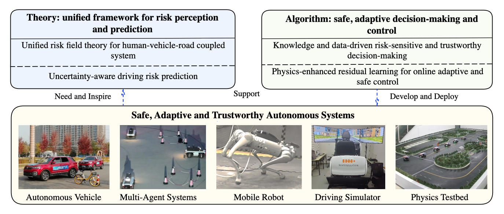
Across these directions, my research connects fundamental questions in safety, prediction, and decision-making with deployable methods for real-world autonomy. By integrating risk-aware reasoning, generative models, world models, and foundation-model agents, I seek to build autonomous systems that are adaptive, trustworthy, and effective across driving, robotics, and broader interactive mobility settings.
Apr/2026
Joined KAIST as a tenure-track assistant professor.
Sep/2025
Joined MIT SMART as a postdoctoral associate.
Aug/2023
Joined the University of Wisconsin-Madison as a research associate.
2024
2023
2022
2021
2020
2019
2018
2017
ACES Lab
Autonomous Cognitive and Embodied Systems Lab
Yibin Yang
Sep. 2023 - Apr. 2024
Zhiyuan Zhou
Jun. 2024 - Dec. 2025
Yuhang Wang
Since Dec. 2024
Yiwei Shu
Since Aug. 2024
Zhaohui Wang
Since Nov. 2024
Weining Ren
Since Feb. 2026
Jingtao Shen
Starting May 2026
Lingxuan Zhou
Since Apr. 2026
Jienan Lv
Since Apr. 2026
(* corresponding author, # equal contributions)
CogDrive: Cognition-Driven Multimodal Prediction-Planning Fusion for Safe Autonomy
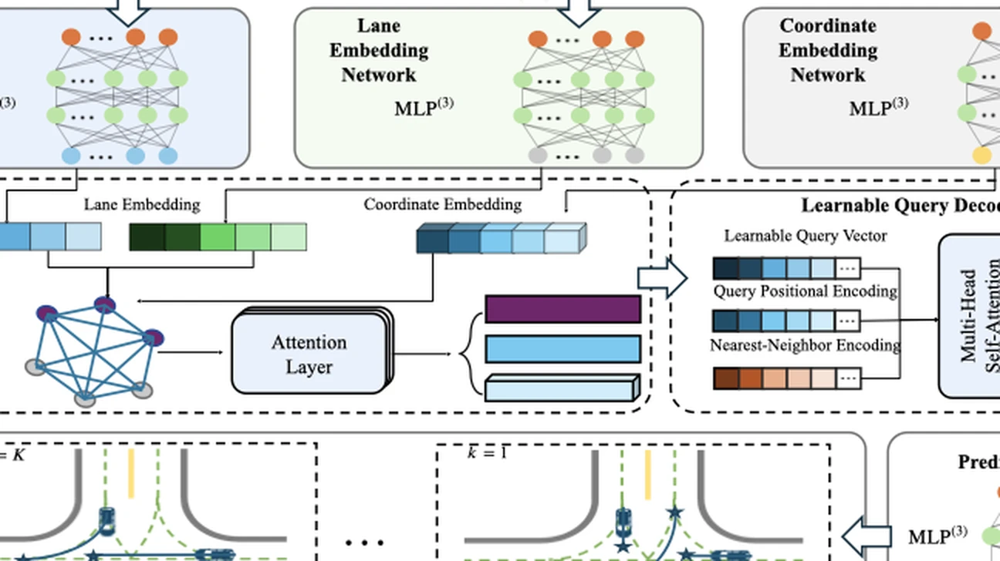
LEAD: Learning-Enhanced Adaptive Decision-Making for Autonomous Driving in Dynamic Environments
REACT: Runtime-Enabled Active Collision-Avoidance Technique for Autonomous Driving
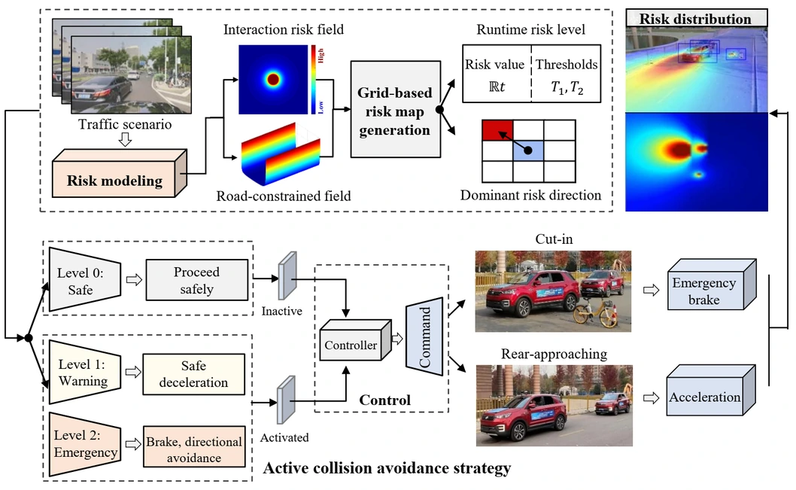
Understanding Driver Cognition and Decision-Making Behaviors in High-Risk Scenarios: A Drift Diffusion Perspective
General Optimal Trajectory Planning: Enabling Autonomous Vehicles with the Principle of Least Action
Risk Generation and Identification of Driver-Vehicle-Road Microtraffic System
Best Paper Award
Probabilistic Situation Assessment for Intelligent Vehicles with Uncertain Trajectory Distribution
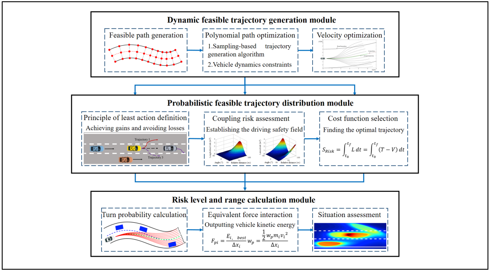
An Integrated Architecture for Intelligence Evaluation of Automated Vehicles
Best Paper Award

A Probabilistic Risk Assessment Framework Considering Lane-Changing Behavior Interaction
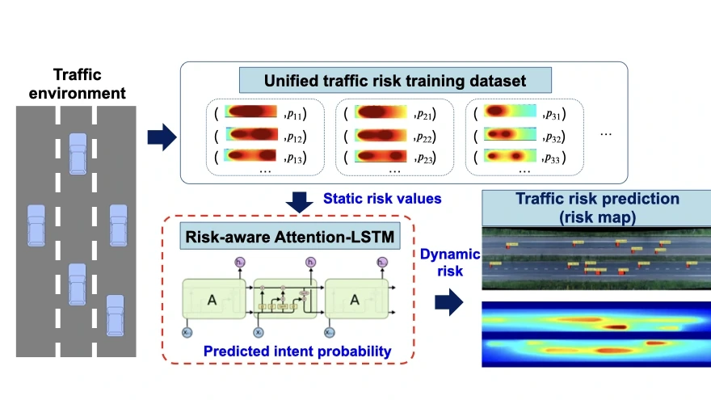
Towards The Unified Principles for Level 5 Autonomous Vehicles
Journal Cover Paper
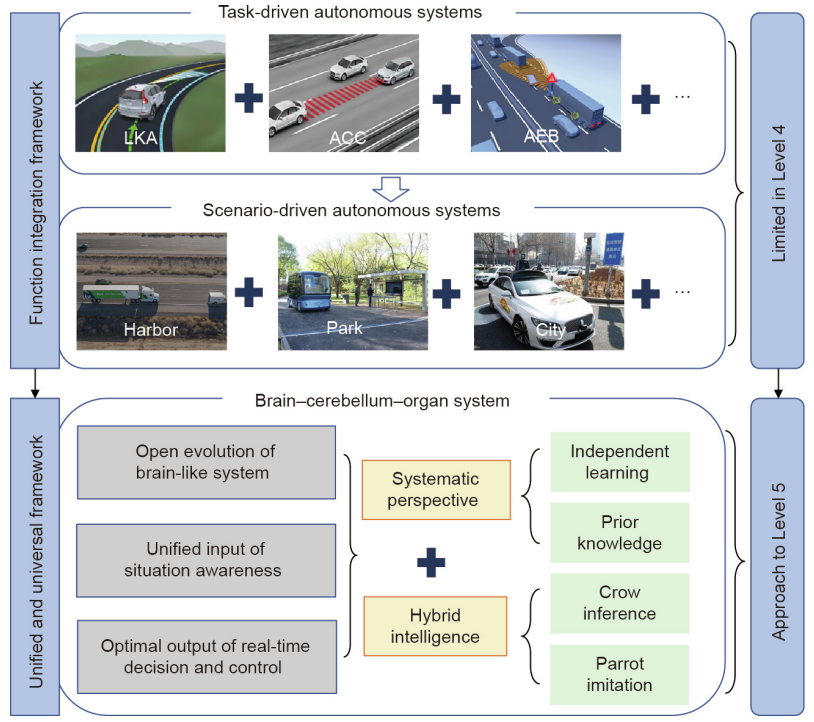
Driving Risk Assessment Based on Naturalistic Driving Study and Driver Attitude Questionnaire Analysis

RiskNet: Interaction-Aware Risk Forecasting for Autonomous Driving in Long-Tail Scenarios
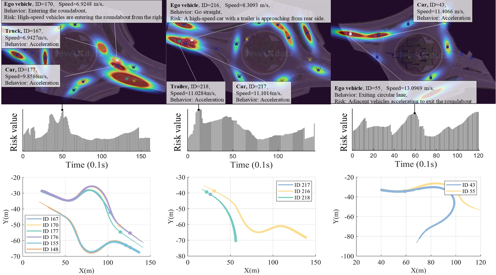
Online Adaptive Platoon Control for Connected and Automated Vehicles via Physics Enhanced Residual Learning
SafeDrive: Knowledge-and Data-Driven Risk-Sensitive Decision-Making for Autonomous Vehicles with Large Language Models
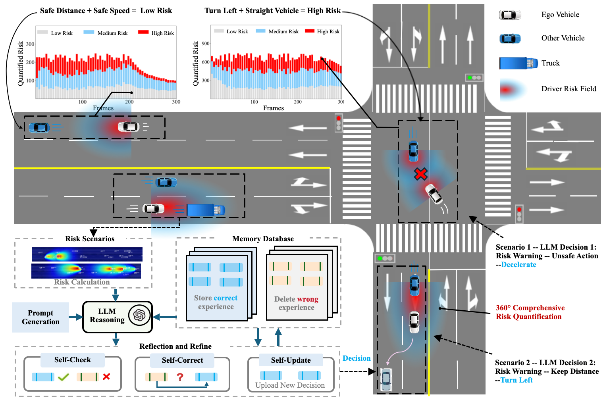
CSDO: Enhancing Efficiency and Success in Large-Scale Multi-Vehicle Trajectory Planning
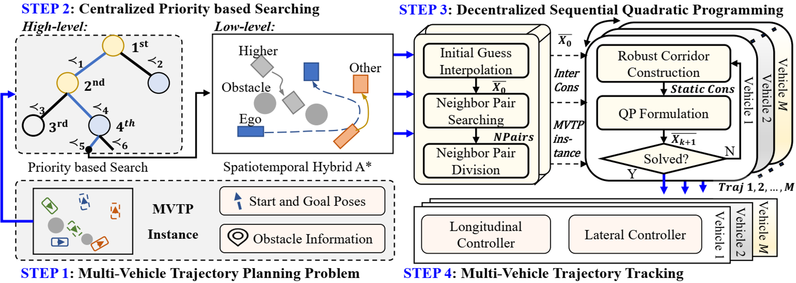
Unveiling Uniform Shifted Power Law in Stochastic Human and Autonomous Driving Behavior
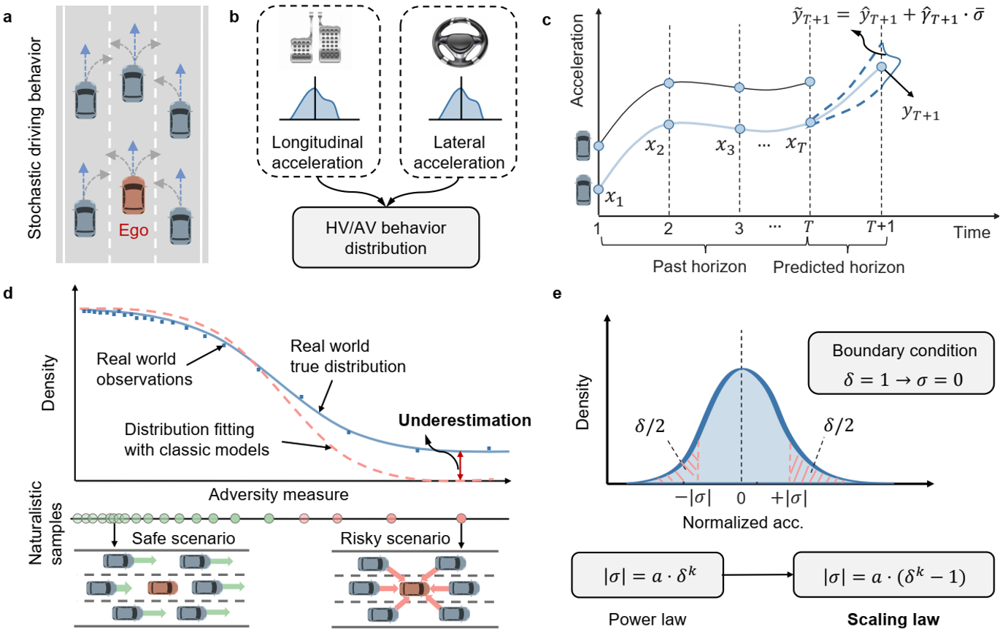
SMART: Scalable Multi-Agent Reasoning and Trajectory Planning in Dense Environments
Learning from Risk: LLM-Guided Generation of Safety-Critical Scenarios with Prior Knowledge
RESPOND: Risk-Enhanced Structured Pattern for LLM-driven Online Node-level Decision-making
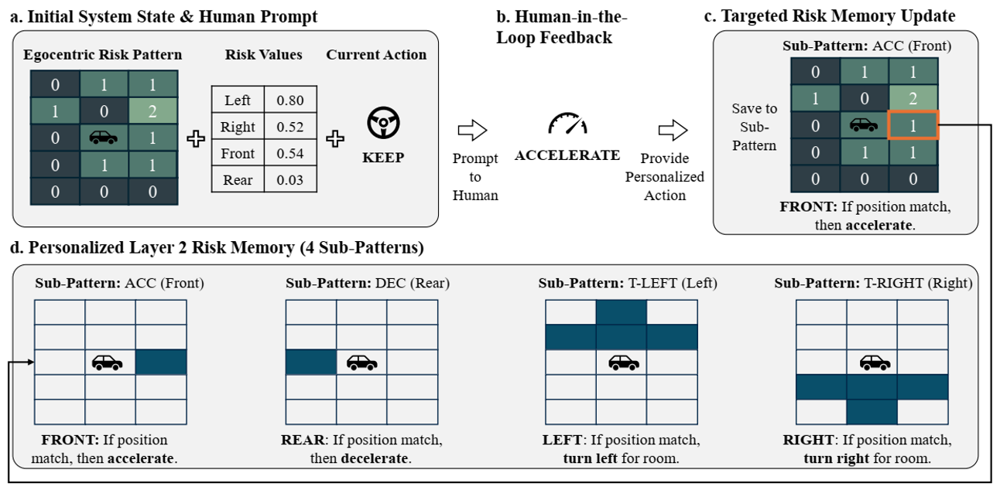
Risk-Controllable Multi-View Diffusion for Driving Scenario Generation
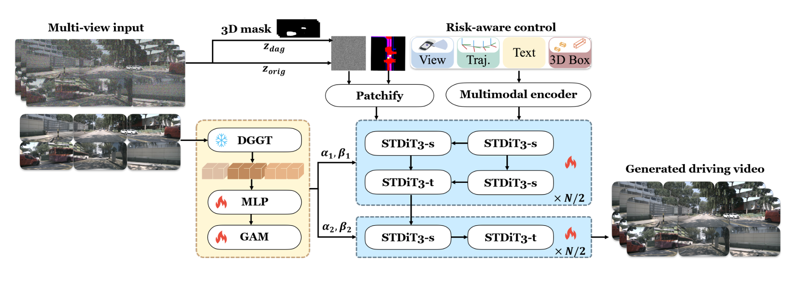
Attention-based Priority Learning for Limited Time Multi-Agent Path Finding
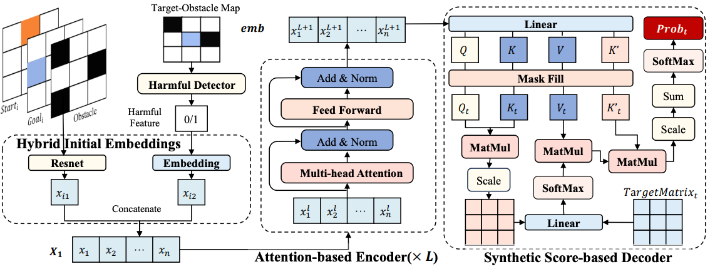
Deception for Advantage in Connected and Automated Vehicle Decision-Making Games
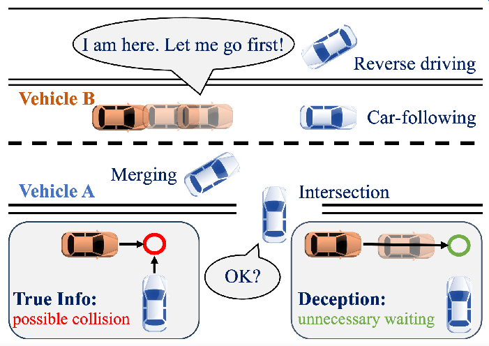
Human Decision-Making in High-Risk Driving Scenarios: A Cognitive Modeling Perspective
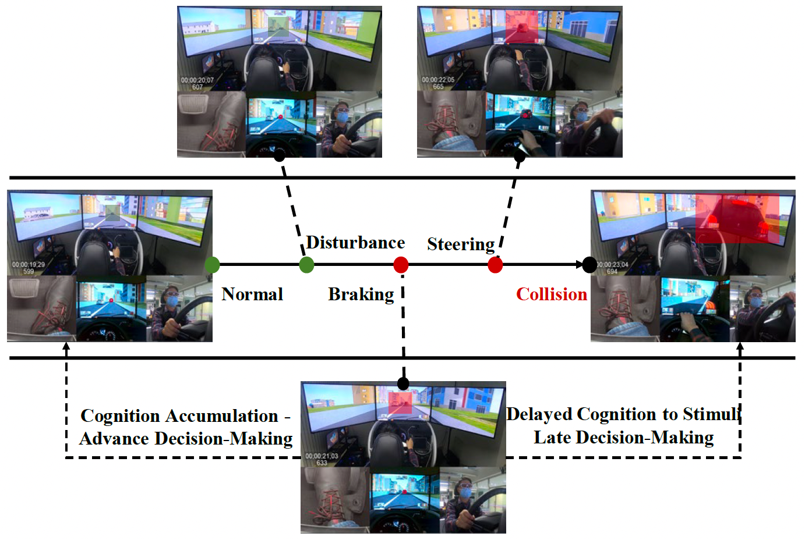
Online Physical Enhanced Residual Learning for Connected Autonomous Vehicles Platoon Centralized Control
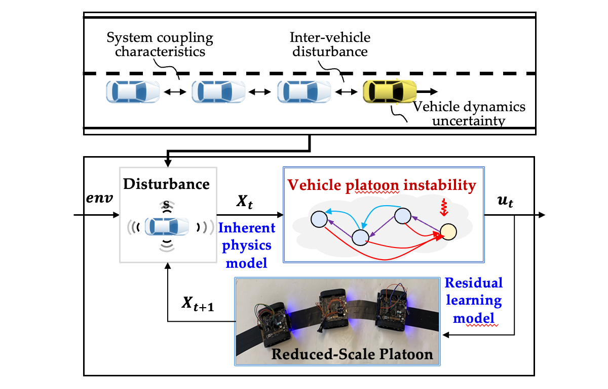
Intelligent Adaptive Decision-Making for Autonomous Vehicles: A Learning-Enhanced Game-Theoretic Approach in Interactive Scenarios
Best Paper Award
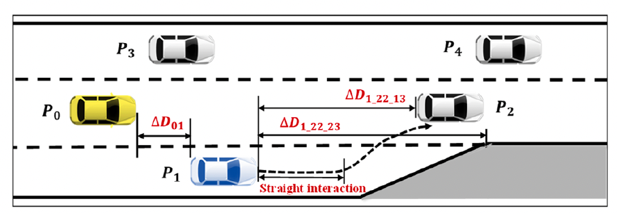
SACA: A Scenario-Aware Collision Avoidance Framework for Autonomous Vehicles Integrating LLMs-Driven Reasoning
Multi-Vehicles and Traffic Signal Coordination: A Parallel Computing Approach in Spatial Domain
InVDriver: Intra-Instance Aware Vectorized Query-Based Autonomous Driving Transformer
Joint Optimization of Multi-Vehicles and Traffic Signal: A Parallel Approach in Spatial Domain
Drift Cornering Control and Real-Vehicle Deployment for Electric Vehicles
AI-Enabled Digital Twin Framework for Safe and Sustainable Intelligent Transportation
Emergency Index (EI): A Two-Dimensional Surrogate Safety Measure Considering Vehicles’ Interaction Depth
Safer Conflict-Based Search: Risk-Constrained Optimal Pathfinding for Multiple Connected and Automated Vehicles
Autonomous Vehicle Extreme Control for Emergency Collision Avoidance via Reachability-Guided Reinforcement Learning
A Harmonized Approach: Beyond-the-Limit Control for Autonomous Vehicles Balancing Performance and Safety in Unpredictable Environments
Novel Quantitative Approach for Assessing Driving Risks and Simulation Study of Its Prevention and Control Strategies
On-Road Trajectory Planning of Connected and Automated Vehicles in Complex Traffic Settings: A Hierarchical Framework of Trajectory Refinement
A New Vehicle-to-Vehicle Communication System: Visual-Enhanced Cooperative Traffic Operations
Understanding Driver Risk Cognition and Proactive Decision-Making Behaviors in High-Risk Scenarios
Online Adaptive Platoon Control for Connected and Automated Vehicles via Physical Enhanced Residual Learning
Centralized Searching and Decentralized Optimization for Efficient Multi-Vehicle Trajectory Planning
DTP-M3Net: Monocular Multiclass Multistage Vulnerable Road User Detection, Tracking and Prediction for Autonomous Driving
Modeling and Risk Identification Method for Driver-Vehicle-Road Microscopic Traffic System
A Method and Device for Proactive Response to Driver Risk and Decision-Making Under High-Risk Scenarios
Driving Risk Identification Model Calibration Method and System
Traffic Risk Assessment Method and Device
Intelligent Vehicle Safety Decision-Making Method Employing Driving Safety Field
Safe and Adaptive Automated Driving Empowered by Data Intelligence and Generative AI
China Society of Automotive Engineers Forum
Dec 20, 2025
Towards Safe and Adaptive Urban Mobility with Multimodal Data and Generative AI
Onsite Job Talk · JTL Urban Mobility Lab, MIT
Aug 21, 2025
Towards Safe, Adaptive Autonomous Systems with Multimodal Data and Generative AI
Job Talk · Cho Chun Shik Graduate School of Mobility, KAIST
Aug 20, 2025
Towards Open-World Autonomy: Bridging Ground and Aerial Systems for Future Mobility
Onsite Job Talk · Department of Mechanical Engineering, KU Leuven
May 5, 2025
Learning-Enabled Human-Centered Autonomy for Trustworthy Deployment in Complex Environments
Job Talk · Oxford Robotics Institute
Apr 14, 2025
Probabilistic Risk Assessment and Sequential Decision-Making for Real-World Safety-Critical Systems
Institute for AI Industry Research, Tsinghua University
Nov 2023
Towards Safe, Adaptive, Learning-based Control for Autonomous Systems
Onsite Job Talk · Department of Mechanical Engineering, KU Leuven
May 6, 2025
Uncertainty-Aware Decision-Making for Autonomous Driving in Driver-Vehicle-Road Coupled Environments
National Doctoral Academic Forum of the China SAE, Jilin University
Jun 2023
Towards Driver Risk Perception Mechanism-Driven Decision-Making for Intelligent Vehicles
Institute for AI Industry Research, Tsinghua University
Jun 2023
Towards High-Level Autonomous Driving of Vehicle Intelligent Safety Technology
Delft Center for Systems and Control, Delft University of Technology
Oct 2022
Risk-Aware Driver Model for Autonomous Vehicles based on the Principle of Least Action
Vehicle Engineering Graduate Academic Forum in Beijing Universities, Tsinghua University
May 2022
Probabilistic Driving Risk Assessment Considering Lane-Changing Behavior Interaction
Department of Cognitive Robotics, Delft University of Technology
Mar 2022
Human-Centered Risk Cognition in Autonomous Driving
639th Annual THU Doctoral Forum, Tsinghua University
Jun 2021
Path Planning for Vehicle Obstacle Avoidance Based on Collaborative Perception
558th Annual THU Doctoral Forum, Tsinghua University
May 2019
RO47015 Applied Experimental Methods: Human Factors
ME40150723 Intelligent and Connected Vehicle
EE30230783 Probability Theory and Stochastic Processes
Organizer
Editorial board
Guest editor
Committee membership
Journals
Conferences